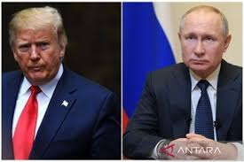
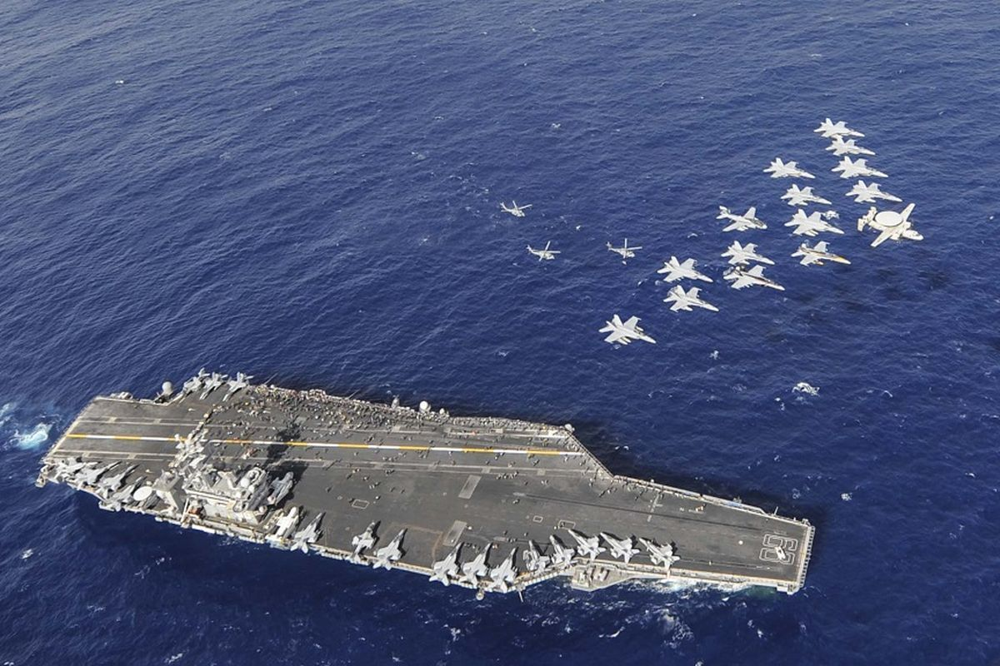
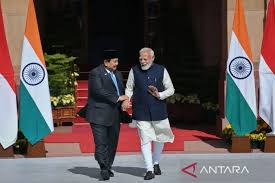
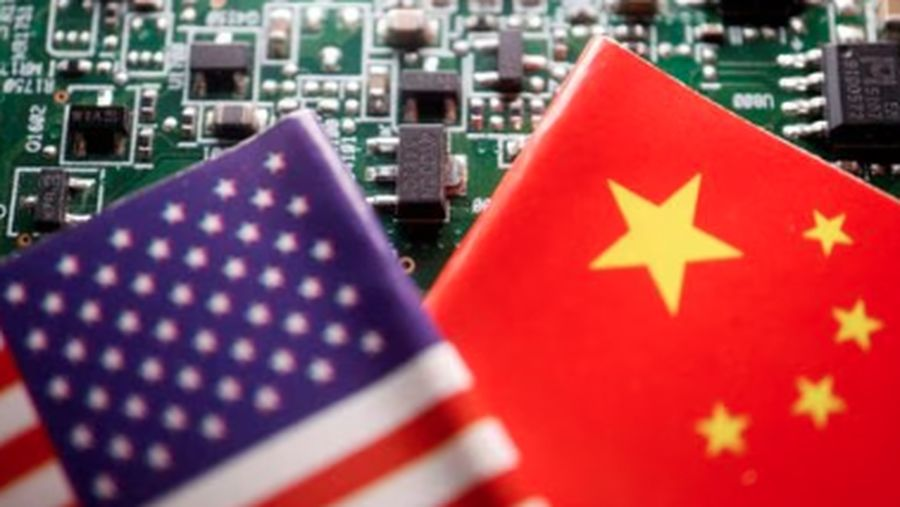

Rusia ancam AS-israel jika bunuh Khameni | |
|  |
Juru bicara Istana Kepresidenan Rusia Kremlin, Dmitry Peskov, melayangkan peringatan keras itu dalam wawancaranya dengan Sky News pada Jumat (20/6). Baca artikel CNN Indonesia "Rusia Ancam AS-Israel Jika Bunuh Khamenei
Peskov menegaskan bahwa Rusia akan merespons dengan "sangat buruk" apabila Khamenei terbunuh.
"[Kami akan merespons] dengan sangat buruk. Sangat buruk. Kami akan sangat tidak menyetujuinya," ucap Peskov dalam wawancara langka dengan Sky News, Jumat (20/6).
SELENGKAPNYA |
Kapal Induk AS USS Nimitz Hilang Sinyal di Perairan Indonesia, Diduga Menuju Teluk Persia |  |
Meski tidak diumumkan secara resmi, arah pelayaran USS Nimitz menunjukkan kemungkinan besar kapal ini bergerak ke kawasan Teluk Persia. Artikel ini telah tayang di Kompas.com dengan judul "Kapal Induk AS USS Nimitz Hilang Sinyal di Perairan Indonesia, Diduga Menuju Teluk Persia"
Hal ini diperkuat oleh pernyataan seorang pejabat pertahanan AS kepada kantor berita RIA Novosti bahwa Menteri Pertahanan AS Pete Hegseth telah menginstruksikan pemindahan kelompok penyerang kapal induk Nimitz ke wilayah Komando Pusat AS.
SELENGKAPNYA |
Bertemu Prabowo, Putin Siap Bantu RI Kembangkan Proyek Nuklir Damai |

|
Presiden Rusia Vladimir Putin menyatakan negaranya siap bekerjasama dengan Indonesia dalam proyek pengembangan nuklir untuk bidang damai. Putin menyampaikan hal tersebut kala bertemu Presiden RI Prabowo Subianto di Istana Konstantinovsky, st. Petersburg, Rusia, Kamis (19/6) waktu setempat.
"Kami terbuka untuk kerja sama dengan mitra Indonesia di bidang nuklir. Kami juga berkeinginan untuk merealisasikan proyek nuklir di bidang damai, termasuk bidang kesehatan, pertanian, dan pelatihan staf," kata Putin dalam pers.
SELENGKAPNYA |
India-Pakistan konflik, PCO: Prabowo selalu serukan penghentian perang |  |
Kepala Kantor Komunikasi Kepresidenan (PCO) Hasan Nasbi menyatakan bahwa Presiden RI Prabowo Subianto secara konsisten menyerukan penghentian perang dan gencatan senjata dalam berbagai konflik internasional, termasuk yang terjadi antara India dan Pakistan.
"Yang jelas pendirian Presiden selama ini di seluruh konflik di dunia, beliau selalu menyerukan penghentian perang sesegera mungkin. Beliau selalu menyerukan gencatan senjata sesegera mungkin di mana pun konflik di dunia," ujar Hasan di Jakarta, Sabtu.
SELENGKAPNYA |
India-Pakistan konflik, PCO: Prabowo selalu serukan penghentian perang |  |
CEO Nvidia Jensen Huang membeberkan kenyataan pahit. Ia mengatakan jika Amerika Serikat (AS) terus-terusan membatasi chip AI ke China, maka Huawei akan mendapat peluang besar untuk memenuhi kebutuhan di Negeri Tirai Bambu.
"Yang Selama bertahun-tahun, AS berupaya untuk menghalangi perkembangan teknologi canggih China. Belakangan, upaya itu dilakukan dengan melancarkan pemblokiran akses chip dan teknologi chip canggih dari AS dan negara sekutu ke China.
SELENGKAPNYA |